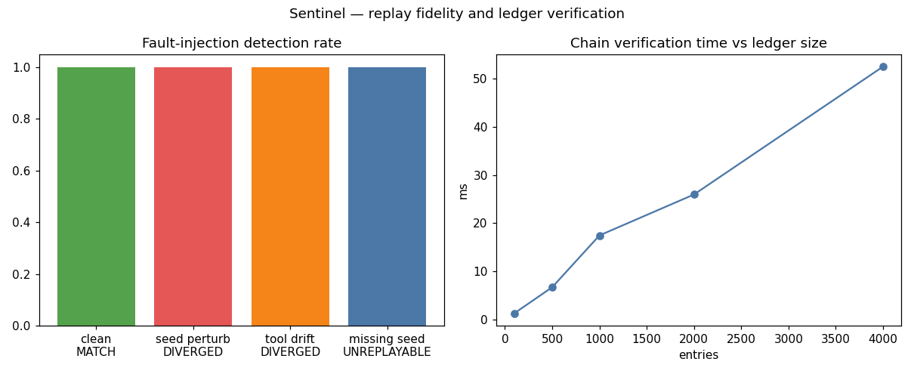

Tamper-evident evidence ledger and deterministic replay for agent decisions
When agents make consequential decisions — financial, operational, compliance-bound — you must be able to prove what happened, why, and reproduce it exactly. Text logs don't provide that: they can be edited, they omit seeds and tool effects, and replays are approximate.
Agent frameworks log unstructured text with no integrity guarantees. Replay is non-deterministic (model sampling, live tool calls), so 'it worked in replay' proves little, and fault location after a divergence is manual guesswork.
Sentinel records every decision as a SHA-256 hash-chained entry (inputs, seed, model version, tool calls) and captures external effects in tool cassettes. The replay engine re-executes deterministically from the ledger, returning verdicts MATCH / DIVERGED / UNREPLAYABLE with step-level fault location. Forged entries break the chain and are detected on verify.
| Scenario | n | Result |
|---|---|---|
| Clean replay | 600 | 100% MATCH (0.07 ms/decision) |
| Seed perturbed | 150 | 100% DIVERGED |
| Tool result mutated | 150 | 100% DIVERGED, 100% step-located |
| Seed stripped | 150 | 100% UNREPLAYABLE |
| Ledger entry forged | 1 | detected at index 100 |
Chain verification is O(n): 4,000 entries verify in ~52 ms.

experiments/run_experiments.py — re-running reproduces these exactly.src/agentic_systems/sentinel/
ledger.py # hash-chained record store, verify(), tamper detection
sim_agent.py # instrumented agent: seeds + tool cassettes
02-sentinel-ledger/
experiments/run_experiments.py # clean replay + 4 fault injections
Full source, tests, and experiment code: 02-sentinel-ledger/ ·
Run: cd 02-sentinel-ledger && python3 experiments/run_experiments.py